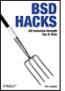

< Day Day Up >

•
Table of Contents
•
Index
•
Reviews
•
Reader Reviews
•
Errata
•
Academic
BSD Hacks
By
Dru Lavigne
Publisher
: O'Reilly
Pub Date
: May 2004
ISBN
: 0-596-00679-9
Pages
: 300
Credits
About the Author
Contributors
Acknowledgments
Preface
Why BSD Hacks?
How to Use this Book
How This Book Is Organized
Conventions Used in This Book
Using Code Examples
We'd Like to Hear from You
Chapter 1. Customizing the User Environment
Section 0. Introduction
Section 1. Get the Most Out of the Default Shell
Section 2. Useful tcsh Shell Configuration File Options
Section 3. Create Shell Bindings
Section 4. Use Terminal and X Bindings
Section 5. Use the Mouse at a Terminal
Section 6. Get Your Daily Dose of Trivia
Section 7. Lock the Screen
Section 8. Create a Trash Directory
Section 9. Customize User Configurations
Section 10. Maintain Your Environment on Multiple Systems
Section 11. Use an Interactive Shell
Section 12. Use Multiple Screens on One Terminal
Chapter 2. Dealing with Files and Filesystems
Section 12. Introduction
Section 13. Find Things
Section 14. Get the Most Out of grep
Section 15. Manipulate Files with sed
Section 16. Format Text at the Command Line
Section 17. Delimiter Dilemma
Section 18. DOS Floppy Manipulation
Section 19. Access Windows Shares Without a Server
Section 20. Deal with Disk Hogs
Section 21. Manage Temporary Files and Swap Space
Section 22. Recreate a Directory Structure Using mtree
Section 23. Ghosting Systems
Chapter 3. The Boot and Login Environments
Introduction
Section 24. Customize the Default Boot Menu
Section 25. Protect the Boot Process
Section 26. Run a Headless System
Section 27. Log a Headless Server Remotely
Section 28. Remove the Terminal Login Banner
Section 29. Protecting Passwords With Blowfish Hashes
Section 30. Monitor Password Policy Compliance
Section 31. Create an Effective, Reusable Password Policy
Section 32. Automate Memorable Password Generation
Section 33. Use One Time Passwords
Section 34. Restrict Logins
Chapter 4. Backing Up
Introduction
Section 35. Back Up FreeBSD with SMBFS
Section 36. Create Portable POSIX Archives
Section 37. Interactive Copy
Section 38. Secure Backups Over a Network
Section 39. Automate Remote Backups
Section 40. Automate Data Dumps for PostgreSQL Databases
Section 41. Perform Client-Server Cross-Platform Backups with Bacula
Chapter 5. Networking Hacks
Introduction
Section 42. See Console Messages Over a Remote Login
Section 43. Spoof a MAC Address
Section 44. Use Multiple Wireless NIC Configurations
Section 45. Survive Catastrophic Internet Loss
Section 46. Humanize tcpdump Output
Section 47. Understand DNS Records and Tools
Section 48. Send and Receive Email Without a Mail Client
Section 49. Why Do I Need sendmail?
Section 50. Hold Email for Later Delivery
Section 51. Get the Most Out of FTP
Section 52. Distributed Command Execution
Section 53. Interactive Remote Administration
Chapter 6. Securing the System
Introduction
Section 54. Strip the Kernel
Section 55. FreeBSD Access Control Lists
Section 56. Protect Files with Flags
Section 57. Tighten Security with Mandatory Access Control
Section 58. Use mtree as a Built-in Tripwire
Section 59. Intrusion Detection with Snort, ACID, MySQL, and FreeBSD
Section 60. Encrypt Your Hard Disk
Section 61. Sudo Gotchas
Section 62. sudoscript
Section 63. Restrict an SSH server
Section 64. Script IP Filter Rulesets
Section 65. Secure a Wireless Network Using PF
Section 66. Automatically Generate Firewall Rules
Section 67. Automate Security Patches
Section 68. Scan a Network of Windows Computers for Viruses
Chapter 7. Going Beyond the Basics
Introduction
Section 69. Tune FreeBSD for Different Applications
Section 70. Traffic Shaping on FreeBSD
Section 71. Create an Emergency Repair Kit
Section 72. Use the FreeBSD Recovery Process
Section 73. Use the GNU Debugger to Analyze a Buffer Overflow
Section 74. Consolidate Web Server Logs
Section 75. Script User Interaction
Section 76. Create a Trade Show Demo
Chapter 8. Keeping Up-to-Date
Introduction
Section 77. Automated Install
Section 78. FreeBSD from Scratch
Section 79. Safely Merge Changes to /etc
Section 80. Automate Updates
Section 81. Create a Package Repository
Section 82. Build a Port Without the Ports Tree
Section 83. Keep Ports Up-to-Date with CTM
Section 84. Navigate the Ports System
Section 85. Downgrade a Port
Section 86. Create Your Own Startup Scripts
Section 87. Automate NetBSD Package Builds
Section 88. Easily Install Unix Applications on Mac OS X
Chapter 9. Grokking BSD
Introduction
Section 89. How'd He Know That?
Section 90. Create Your Own Manpages
Section 91. Get the Most Out of Manpages
Section 92. Apply, Understand, and Create Patches
Section 93. Display Hardware Information
Section 94. Determine Who Is on the System
Section 95. Spelling Bee
Section 96. Leave on Time
Section 97. Run Native Java Applications
Section 98. Rotate Your Signature
Section 99. Useful One-Liners
Section 9.13. Fun with X
Index
< Day Day Up >